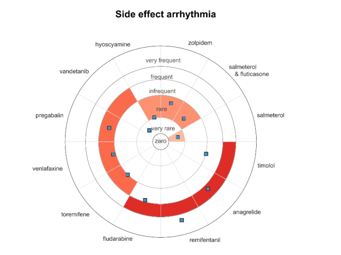
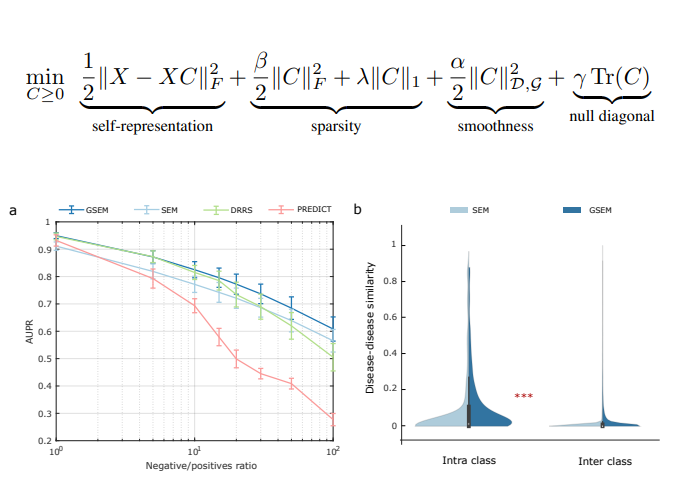
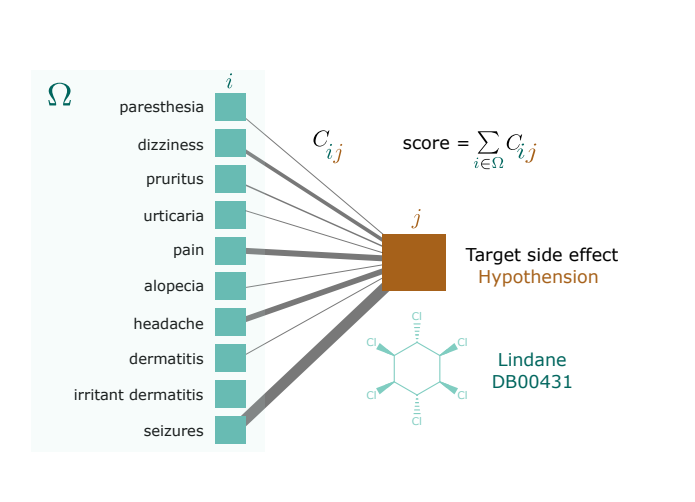
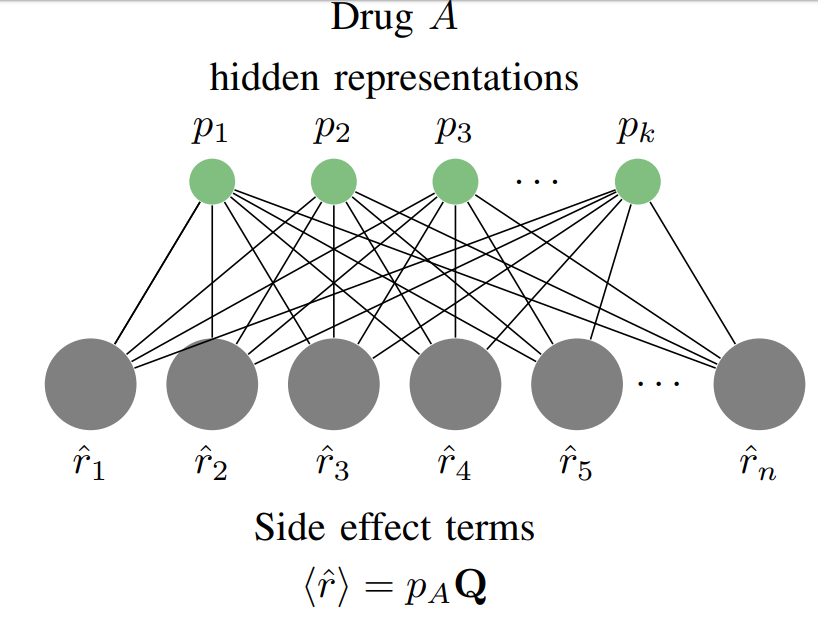
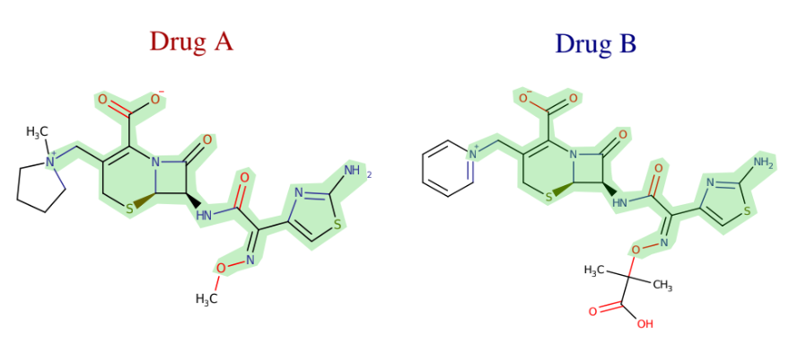

Diego A. Galeano G.
I am a Postdoctoral Researcher in Data Science at Fundação Getulio Vargas (FGV) Rio de Janeiro, Brasil, working with Professor Alberto Paccanaro. I develop machine learning models for applications in healthcare and drug discovery. I have developed the first machine learning model for predicting the frequencies of drug side effects in the population.
My research interest lies in the development of machine learning models that introduces domain-specific knowledge as a prior constraint into a learning model. This is needed in many problems in biology, chemistry and medicine. For instance, in the problem of predicting drug side effects in human, well-known relational information between drugs can be incorporated into a model by building a drug network that exploits their similarities in chemical structure or their activity across cell lines. The application of AI models into biology or pharmacology is a promising cost-effective strategy that can help to speed up the experimental efforts in the discovery of new medicines or in the elucidation of the causative mutations of genetic disorders.
I started a postdoc at FGV-Emap Rio de Janeiro, Brasil in February 2020 ;)!
Recent news
- November 2019 Our paper on Predicting the Frequencies of drug Side effects in under review at Nature Communications! This includes an extension on my bioarXiv paper that includes pharmacological interpretation of the model done in collaboration with Dr. Shantao Li and Prof. Mark Gerstein from Yale University.
- October 2019 Our paper on Learning interpretable disease self-representations for drug repositioning has been accepted at the NeurIPS Graph Representation Learning Workshop!
2019
|

|
Predicting the Frequencies of Drug Side Effects
Diego A. Galeano, and Alberto Paccanaro Preprint 2019. (bioarxiv) |
|

|
Learning Interpretable Disease Self-Representations for Drug Repositioning
(co-first author*) Fabrizio Frasca*, Diego A. Galeano*, Guadalupe Gonzalez, Ivan Laponogov, Kirill Veselkov, Alberto Paccanaro, Michael M Bronstein NeurIPS Graph Representation Learning Workshop. 2019. pdf (arxiv) |
|

|
The Geometric Sparse Matrix Completion Model for Predicting Drug Side effects
Diego A. Galeano, Alberto Paccanaro Preprint. 2019. (bioarxiv) |
2018
|

|
A recommender system approach for predicting drug side effects
Diego A. Galeano, and Alberto Paccanaro IJCNN. 2018. (IEEE Xplore) |
2017

|
Mining the Biomedical Literature to predict shared drug targets in drugbank
(co-first author*) Horacio Caniza*, Diego A. Galeano*, and Alberto Paccanaro IEEE-CLEI. 2017. (IEEE Xplore) |
2016
|

|
Drug targets prediction using chemical similarity
Diego A. Galeano, and Alberto Paccanaro IEEE-CLEI. 2016. |
2015
|
|
Posturography Platform and Balance Control Training and Research System Based on FES and Muscle Synergies
Diego A. Galeano, Fernando Brunetti, Diego Torricelli, S. Piazza, JLP Rovira Springer Series in Computational Neuroscience (book). 2015. |
2014
|
|
A tool for balance control training using muscle synergies and multimodal interfaces
Diego A. Galeano, F. Brunetti, D. Torricelli, S. Piazza, JLP Rovira BioMed research international (Hindawi) 2014. |
2013
|
|
A low cost platform based on FES and muscle synergies for postural control research and rehabilitation
Diego A. Galeano, F. Brunetti, S. Piazza, D. Torricelli NEUROTECHNIX 2013. |
1 - Predicting the frequencies of drug side effects
Diego Galeano is a Postdoctoral Researcher in Data Science at Fundação Getulio Vargas (FGV) Rio de Janeiro, Brasil. Diego completed his Ph.D. at Royal Holloway, University of London in 2019, working under the supervision of Prof. Alberto Paccanaro. Diego received a full-ride ITAIPU scholarship for undergraduate studies in Paraguay, and in 2015, the BECAL scholarship for his doctoral studies in London. Diego was a research fellow of GersteinLab at Yale University in 2017, where he worked in model interpretability and enhancer prediction. This research visit was thanks to the Royal Holloway Travel Award, the Santander Travel Award and the BECAL Travel Award. He also received the best poster and presentation awards for three years at the Annual Computer Science Colloquium at Royal Holloway. His interests lie in applications of AI and machine learning in healthcare, biology and medicine. He is also interested in the social impact of AI.

Posdoctoral Researcher
Escola de Matemática Aplicada, FGV-Emap
Office: NA
diego.galeano@fgv.br
Yesterday it made to the cover of @ScienceMagazine an article describing two lead compounds that binds to the main protease of the SARS-CoV-2. I searched for chemically similar drugs in the pool of FDA-approved drugs and found another hit [THREAD, 1/7] https://t.co/IrMbPf755z
— diego galeano (@diegogaleano05) June 19, 2020